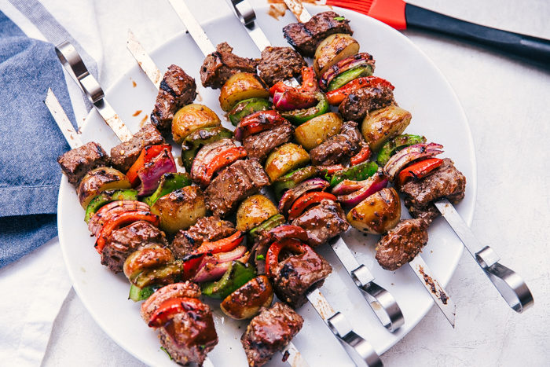

Beef Shishkabobs

Description
Beef shish kabobs are the ultimate summer grilling recipe.
Juicy and tender sirloin steak is soaked in the best beef marinade,
then threaded on skewers with onion, bell peppers, and mushrooms before
being tossed on a hot grill for a quick 15 minutes until perfectly browned.
Hello, summer cookouts and dinner parties!
Ingredients
Kebobs
- Steak (I use sirloin for a quality cut that is also affordable)
- Red onion
- Bell pepper
- Mushrooms
Marinade
- Soy sauce
- Balsamic vinegar
- Olive oil
- Worcestershire sauce
- Garlic
- Salt
- Pepper
Steps
- Make the marinade.
- Marinate the steak.
- Thread the skewers.
- Season each skewer with a pinch of salt and pepper.
- Get grilling! Cook 4 to 5 minutes per side, until nicely browned throughout.
Additional Tips
- Don't marinate the steak for longer than 24 hours, as the meat can become gamey.
- When threading the skewers, have fun with different combinations!